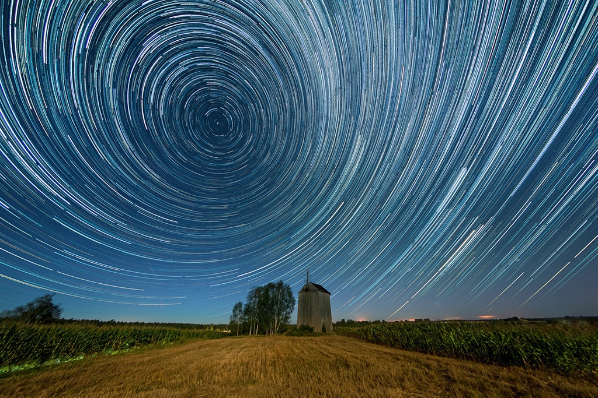

Welcome to the Magical World of the Night Sky!
Discover the unparalleled beauty of the night sky, which hides an endless array of stars, planets, and mysterious phenomena. Our site is dedicated to astronomy enthusiasts and photography lovers who wish to capture stunning images of the sky at night.
Why Should You Explore the Night Sky?
Each night brings new opportunities to discover fascinating phenomena. From twinkling stars to spectacular constellations, the night sky is a source of inspiration and awe. Whether you are an experienced astronomer or just starting your journey in night observation, you will surely find something here for yourself!
Our Gallery
We encourage you to visit our gallery, where you will find magnificent photos of the night sky taken by enthusiasts from around the world. See how diverse and beautiful night landscapes can be, and discover the techniques that allow you to capture these unforgettable moments.
About Me
Hello! I'm a passionate photographer dedicated to capturing the beauty of the night sky. My journey into astrophotography began as a hobby, but it has transformed into a lifelong passion. I believe that every star has a story to tell, and I strive to convey that magic through my lens. Join me as we explore the cosmos together, one photograph at a time!
Join Our Community!
Share your experiences and photos, and engage in discussions with other astronomy lovers. Together, we can explore the wonders of the night sky and inspire each other for further discoveries!